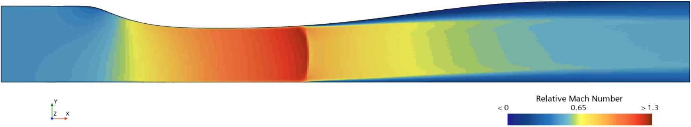

STAR-CCM+ · Verification & Validation
Sajben Transonic Diffuser: Separating Numerical Error from Model Error
- Objective
- Solve a compressible internal flow with a shock, measure how much of the error comes from the mesh, then characterize where RANS departs from experiment.
- Tools
- Simcenter STAR-CCM+ 2210, Python.
- Case
- Sajben transonic diffuser, weak-shock condition. NASA WIND (NPARC Alliance) validation archive.
- Role
- Built the geometry, mesh family, and case setup; ran all cases; wrote the post-processing and V&V analysis.
- Result
- Grid-converged shock position 1.4230 x/h with a numerical uncertainty of 0.22%, against an experimental 1.280. That is a +11.2% modeling error, roughly 51 times larger than the mesh uncertainty. Choice of turbulence model accounts for about half of it.
Problem
This flow is an analog for off-nominal, overexpanded nozzle operation: a shock sitting inside the duct with the boundary layer separating behind it, which is what happens to a rocket nozzle at low altitude or during throttling. It is deliberately not the clean isentropic expansion of a nozzle running at its design point, and shock position matters in that regime because it sets where the flow separates from the wall.
Predicting that position is only useful if the error in it can be attributed. When a CFD result disagrees with experiment, there are two possible causes. Either the equations were solved imprecisely, meaning the mesh was too coarse, or the wrong equations were solved, meaning the physical model is inadequate. Most studies cannot tell these apart, which makes a statement like "my result is 10% off" close to uninterpretable. Running the same case on three meshes of increasing resolution shows how much the answer is still moving as the mesh improves, which puts a number on how much of the error the mesh is responsible for. If that number is small, a large remaining disagreement has to be coming from the model. This is standard practice in industrial verification and validation, and it is the step most commonly skipped.
The case
The Sajben diffuser is a converging-diverging duct that is one-sided. The lower wall is flat across the whole domain and all of the area change happens in the upper wall. Because the two walls have different shapes, the pressure measured along each one is different, so a single run can be checked against two separate sets of experimental data rather than one.
Air enters subsonically at M = 0.46, accelerates through the contraction, goes supersonic past the throat, terminates in a normal shock, separates from the upper wall, and recovers subsonically through the diffuser.
What makes it a hard case is that the shock and the boundary layer feed back on each other. The shock's pressure rise separates the boundary layer, the separated layer changes how much of the duct the flow can actually use, and that in turn moves the shock. RANS handles this interaction imperfectly, and the documented failure mode for this case is a shock predicted downstream of where it was measured.
| Quantity | Value |
|---|---|
| Stagnation pressure | 19.58 psia (134,999 Pa) |
| Stagnation temperature | 500 R (277.778 K) |
| Inlet Mach | 0.46 |
| Exit static pressure (weak shock) | 16.05 psia (110,661 Pa) |
| Throat height h | 0.14435 ft (0.0439979 m) |
| Reynolds number, based on throat height | 6.0 × 105 |
Exit static pressure alone sets how strong the shock is, which is what makes this a clean case to run parametrically.

Setup
Geometry
The archive provides each wall as 81 coordinate points. Joining those points with straight lines leaves the wall kinked rather than smooth, and in the tightest part of the contraction that faceted wall sits up to 350 um from where a smooth curve would run, around 300 times the height of the smallest cell in the mesh. Every kink would act as a small artificial disturbance in exactly the boundary layer the mesh was built to resolve, so both walls were resampled onto a cubic spline before meshing. The resampled geometry matches the archive's quoted throat height and exit-to-throat area ratio to within 0.001%. An assumption worth stating is that the spline reconstructs the wall between NASA's points, since the original tunnel contour is not available.
Geometry build, and how the reconstruction was checked
The 81 archive points are spaced 0.14 to 0.53 in apart. Both walls were resampled onto a cubic spline at 801 points and converted to metres. Checks after resampling:
| Quantity | Resampled | Archive |
|---|---|---|
| Throat height | 1.732199 in | 1.73221 in |
| Inlet height | 2.44483 in | 2.44483 in |
| Exit height | 2.59830 in | 2.59830 in |
Splining also moved the computed throat from x = -0.0394 in to x = +0.0086 in, essentially onto x = 0, which is closer to the archive's stated throat location than the raw points were. That is a useful sign the reconstruction is not distorting the geometry.
The solid was built in STAR-CCM+ 3D-CAD from the two splines, closed with straight end lines and extruded 1 mm in Z, then collapsed by the 2D conversion. Surfaces were split by angle at a 30 degree threshold, which leaves each wall as a single surface.
One inconsistency in the archive itself is data.Mach46.txt lists the throat height
as 0.14435 ft = 4.407 cm, where the correct conversion is 4.400 cm. A 0.16% discrepancy,
negligible for x/h normalization, but the archive is not perfectly self-consistent.
Boundary conditions
| Boundary | Type | Values |
|---|---|---|
| Inlet | Stagnation inlet | P0 = 134,999 Pa, T0 = 277.778 K |
| Outlet | Pressure outlet | 110,661 Pa static |
| Both walls | No-slip, adiabatic |
The inflow is subsonic, so conditions at the inlet are not fixed by what is upstream alone: pressure information travels back up the duct from downstream. A stagnation inlet handles that correctly by imposing stagnation pressure and temperature and letting the solver work out the velocity from the interior solution, which is what a flow fed from a reservoir actually does. A velocity inlet would force the velocity to a chosen value, fixing the answer rather than predicting it.
That gives a free check on the whole setup. No Mach number was imposed anywhere, yet the solution settled at an inlet Mach of 0.45971 on the fine mesh, a 0.063% error against the published 0.46. A geometry error, a unit error, or a wrong reference pressure would all show up here. The value drifts slightly further from 0.46 as the mesh refines, in the same direction as everything else in this study, and the by-mesh numbers are in the verification section.
The archive does not specify inlet turbulence quantities, so solver defaults were kept (turbulence intensity 1%, turbulent viscosity ratio 10). Keeping the default is easier to defend than a hand-picked value when nothing is sourced.
Mesh
Structured mesh built with STAR-CCM+ Directed Mesh, three levels, with every cell dimension shrinking by exactly 1.5 between levels. Wall spacing targets y+ = 2 on the coarse mesh.
How the first cell height was sized
Spacing came from the CFD-Online y+ calculator, which takes local flow conditions. The archive gives only stagnation conditions, so throat conditions were derived first. The duct is choked, so M = 1 at the throat, and with f = 1 + 0.2M2 = 1.2:
T = T0 / f = 231.48 K p = P0 * f^-3.5 = 71,318 Pa rho = p / (R T) = 1.0733 kg/m^3 U = sqrt(gamma R T) = 305.01 m/s (M = 1) mu = Sutherland(T) = 1.5019e-5 Pa.s
The throat is the worst case for wall shear, and one first cell height is used along the entire wall, so sizing there leaves everywhere else better resolved. Boundary layer run length from inlet to throat is L = 7 in = 0.1778 m.
Those five values into the calculator, targeting y+ = 2:
Re_L = rho U L / mu = 3.88e6 Cf = 0.058 Re_L^-0.2 = 0.00279 (flat plate) tau_w = 0.5 Cf rho U^2 = 139.3 Pa u_tau = sqrt(tau_w / rho) = 11.39 m/s dy1 = y+ mu / (rho u_tau) = 2.456 um
Medium and fine divide this by 1.5 per level: 1.637 um and 1.092 um.
| Mesh | Cells | Streamwise Δx | First cell height | Achieved y+ | Near-wall aspect ratio |
|---|---|---|---|---|---|
| Coarse | 12,800 | 3.490 mm | 2.456 um | 0.998 | 1421 |
| Medium | 28,800 | 2.326 mm | 1.637 um | 0.866 | 1421 |
| Fine | 64,800 | 1.551 mm | 1.092 um | 0.933 | 1421 |
What these mesh quantities mean
Streamwise Δx is the length of a cell along the flow direction. Smaller means the shock is captured over a shorter distance and its position is pinned down more precisely.
First cell height is the thickness of the very first cell against the wall, measured perpendicular to it. Velocity changes extremely rapidly across the boundary layer, so this cell has to be tiny to capture that gradient.
y+ is a dimensionless measure of how far that first cell center sits from the wall, scaled by the local friction at the wall. It tells you whether the near-wall mesh is fine enough for the turbulence model. Below about 1, the model resolves the flow right down to the wall. Above about 30, it uses a formula to bridge the gap instead. The range in between is the worst place to be. All three meshes here sit below 1.
Near-wall aspect ratio is the streamwise cell length divided by the first cell height, so it describes cell shape. A value of 1421 means these cells are long and thin, which is normal for a boundary layer mesh, since the flow changes far faster perpendicular to the wall than along it.
Achieved y+ came out near 1 rather than the targeted 2, because the flat-plate correlation evaluates wall shear at the throat velocity while treating the boundary layer as though it grew at that speed the whole way, when the flow actually accelerates from roughly 150 m/s at the inlet. It also does not fall steadily across the family (0.998, 0.866, 0.933) even though the cells shrink every time, since y+ depends on computed wall friction as well as spacing and better resolution raises that friction. First cell height is the design input; y+ is the measured outcome. All three meshes are wall-resolved either way.
The near-wall aspect ratio being identical on all three meshes is the useful number here. It shows the three meshes are the same mesh at different scales rather than three different meshes, because cell shape is preserved and only cell size changes. That is the condition the grid convergence method requires, and most studies assert it without demonstrating it.
Why structured, and why refine by 1.5 rather than the more common root-2
Structured because the grid convergence method requires geometrically similar meshes with one clear refinement factor. Scaling node count in each direction shrinks every cell by the same amount. On an unstructured mesh "refine by 1.5x" is fuzzy, since the mesher redistributes cells unevenly and the effective factor varies from place to place. Aligned cell faces also keep the shock crisp, whereas a shock cutting diagonally across skewed cells gets smeared, which blurs the quantity being measured.
A factor of 1.5 because the observed-order formula assumes an identical refinement factor between every pair of meshes, and root-2 cannot be hit exactly with whole numbers of cells. Going 160, 226, 320 gives 1.4125 and 1.4159, which drift. Going 160, 240, 360 gives exactly 1.5 every time, and the wider spacing between meshes gives a cleaner signal against iterative noise.
Solver
The case was run with a coupled density-based implicit solver, second-order accurate throughout, using Roe flux-difference splitting, Sutherland's law for viscosity, and low-Mach preconditioning.
What those solver settings are, in plain terms
Coupled density-based solver. Pressure-based solvers handle the governing equations one after another and suit low-speed flow. Density-based solvers solve mass, momentum, and energy together as one system, which is what is needed when density, pressure, and velocity are all strongly linked, as they are across a shock. This entire problem is a shock.
Roe flux-difference splitting. A scheme for computing how much mass, momentum, and energy crosses each cell face. It is built around the physics of waves traveling through the fluid, which makes it good at capturing shocks sharply instead of smearing them.
Sutherland's law. Air becomes more viscous as it heats up, and Sutherland's law is the standard formula relating the two. Temperature varies substantially through this flow, so holding viscosity constant would be inaccurate.
Low-Mach preconditioning. Density-based solvers converge poorly where the flow is much slower than the speed of sound. This flow spans M = 0.46 to above M = 1, so the slower regions would otherwise stall convergence. Preconditioning rescales the equations to fix that without changing the converged answer.
Solver defaults were kept until they demonstrably failed. The automatic CFL controller, which governs how aggressively the solver advances toward a steady answer, ramped to about 17,000. At that point the linear solver started rejecting steps and repeatedly halving CFL, and the residuals stopped falling. Capping the maximum CFL at 50 dropped every residual by roughly a factor of ten and stabilized the run. This was an intervention made after an observed failure rather than tuning applied in advance, and CFL affects only how the solution reaches steady state, not what the steady answer is.
Verification
Verification comes first because you cannot claim RANS is wrong by 11% until you have shown that mesh error is much smaller than 11%.
Iterative convergence
Mass is conserved to 2.8 × 10-5 % on the fine mesh, with residuals flat. Computed mass flow reaches 99.08% of the ideal value for a choked throat. That 0.9% shortfall is physically correct rather than an error, because the boundary layer occupies part of the throat and leaves the flow slightly less area than the geometry suggests. Hitting exactly 100% would mean the boundary layer was missing.
One methodological correction is worth reporting. The original plan fixed every mesh at 5000 iterations so the three runs would be comparable. That was not enough for the fine mesh, which was still showing residual spikes and needed 6500. Running the same number of iterations does not mean the runs reached the same level of convergence, and the grid convergence method assumes leftover iterative error is negligible compared with mesh error. The defensible approach is to converge each mesh to a target level and report the iteration count as a result rather than fixing it as a setting.
The coarse mesh also never fully settled. Its residuals dropped and then oscillated at a steady amplitude instead of continuing down. Refining the mesh removed the oscillation completely, which identified the cause: on the coarse mesh the shock was jumping back and forth between neighboring cells because the cells were too large to place it precisely. This diffuser is known to have genuine physical shock oscillation, so the distinction mattered. A physical oscillation would not disappear just because the mesh improved.

Grid convergence
Shock position leads this section. It is the quantity the experiment measures, it is the documented weak point of RANS for this case, and it is the engineering-relevant result, since in a nozzle the shock location determines where the flow separates.
Across the three meshes the shock sat at 1.3719, then 1.4117, then 1.4205 x/h on the upper wall. The steps between meshes shrank from +0.0398 to +0.0088 h, a factor of about four and a half. Shrinking steps are what convergence looks like: the answer is still moving, but by less each time, which makes it possible to estimate where it is heading.
That estimate comes from assuming the error falls as a power of cell size:
f(h) = fexact + C hp
where f(h) is the answer computed on a mesh of cell size h, fexact is what an infinitely fine mesh would give, C is a constant, and p is the observed order, meaning how fast the error shrinks as cells get smaller. Three unknowns, which is why the study uses three meshes. Writing f1 for fine, f2 for medium, f3 for coarse, and r = 1.5 for the refinement factor:
p = ln( |(f3 − f2) / (f2 − f1)| ) / ln r
fexact = f1 + (f1 − f2) / (rp − 1)
GCI = Fs |(f2 − f1) / f1| / (rp − 1)
The Grid Convergence Index (GCI) is the number that matters. It is an uncertainty band rather than an error: it says the true mesh-independent answer lies within that percentage of the fine-mesh result. Fs is a safety factor, 1.25 for a three-mesh study, which makes the band deliberately conservative. Applied to shock position on the upper wall, the observed order comes out at p = 3.72, the extrapolated value at 1.4230 x/h, and the GCI at 0.220%.
Worked example, and the asymptotic range check
f3 = 1.3719 (coarse), f2 = 1.4117 (medium), f1 = 1.4205 (fine) (f3 - f2) = -0.0398 (f2 - f1) = -0.0088 ratio = 4.5227 p = ln(4.5227)/ln(1.5) = 3.7221 r^p = 1.5^3.7221 = 4.5193 f_exact = 1.4205 + 0.0088/3.5193 = 1.4230 GCI = 1.25 * (0.0088/1.4205)/3.5193 = 0.00220 = 0.220%
There is one more check. The power law above only holds if all three meshes are already fine enough for a single leading error term to dominate, a state called the asymptotic range. The test for it compares the two mesh pairs:
R = GCI_32 / (r^p * GCI_21), should be close to 1
Shock position gives R = 1.006. NASA's own worked example describes 1.002 as well within the asymptotic range, so 1.006 says the extrapolation is trustworthy rather than a hopeful curve fit. Full method description: NASA spatial convergence tutorial.
Running the same procedure on every quantity of interest gave three distinct behaviors, and each has a physical explanation.
| Quantity | Observed order p | GCI (fine) | Asymptotic ratio R |
|---|---|---|---|
| Shock position, upper wall | 3.72 | 0.220% | 1.006 |
| Shock position, lower wall | 3.72 | 0.217% | 1.006 |
| Peak Mach in the field | 2.39 | 0.089% | 1.001 |
| Mass flow | 0.53 | 0.118% | 1.000 |
| Inlet Mach | 0.48 | 0.189% | 1.000 |
Smooth quantities converge close to the expected rate. The solver is second-order accurate, and peak Mach in the field comes out at p = 2.39, near that. This is the baseline the others should be read against.
Shock position converges faster than theory predicts, at p = 3.72. That is above formal second order, which sounds wrong but is known behavior for the location of a sharp feature: a captured shock snaps toward its converged position faster than smooth-error theory expects. The asymptotic ratio of 1.006 confirms the extrapolation holds regardless.
Boundary-layer-driven quantities converge slowly, at p near 0.5 for mass flow and inlet Mach. Both are set by how much of the throat the boundary layer blocks, and boundary layers resolve more slowly than the free stream. Their uncertainty bands stay small, so this is not a practical problem, but second-order behavior cannot be claimed for them.
The general lesson is that observed order is a property of the quantity being measured, not just of the solver.
Inlet Mach is worth showing across the family, because it is the setup check from earlier and it does not improve with refinement.
| Mesh | Inlet Mach | Error vs published 0.46 |
|---|---|---|
| Coarse | 0.4600464 | +0.010% |
| Medium | 0.4598625 | −0.030% |
| Fine | 0.4597114 | −0.063% |
| Extrapolated | 0.45902 | −0.213% |
The coarse mesh is the closest to the published value and the grid-converged value is the furthest from it, so quoting the coarse number as the setup check would be picking the best-looking result off the least trustworthy mesh. All four are small enough that the setup is verified either way. The direction matters more than the size: refinement moves the solution slightly away from the measured value here, exactly as it does for shock position and for overall wall pressure RMS. Three independent quantities drifting the same way is what makes the modeling-error conclusion hold together rather than resting on shock position alone.
Three further quantities failed to converge at all: minimum wall pressure, peak isentropic wall Mach, and separation bubble length. For these the answer moved one direction from coarse to medium and then reversed from medium to fine. When that happens the method breaks down mathematically and no valid uncertainty can be computed, so they are reported as ranges rather than values. Why they failed turns out to be interesting.
The discontinuity caveat, and why the data resolves it
NASA's guidance for this archive states that where shocks are present, this extrapolation is invalid in the region of the discontinuity itself, though it still applies to quantities computed from the whole flow field. The reason is that the method rests on a Taylor series expansion, and a Taylor series does not exist across a discontinuity.
The caveat is specifically about applying the method pointwise, meaning extrapolating a value at a single grid point sitting inside the shock. Shock position is not that. It is a location extracted from the entire wall pressure distribution, which puts it on the whole-field side of the distinction.
What makes this more than an argument is that the data splits exactly along that line.
| Quantity | What it is | Result |
|---|---|---|
| Minimum wall pressure | a single value at the shock | oscillatory, no valid GCI |
| Peak isentropic wall Mach | derived from that same single value | oscillatory, no valid GCI |
| Shock position | a location from the full distribution | converged, R = 1.006 |
| Peak Mach in the field | a value from a smooth region | converged, R = 1.001 |
The quantities that failed are precisely the pointwise-at-the-shock values the caveat concerns, and the ones that converged are the ones it exempts. The theoretical limit was not assumed here, it was observed. Three separate quantities evaluated inside the discontinuity all refused to produce a valid result, while feature-location and smooth-region quantities converged cleanly with asymptotic ratios within 0.6% of one.
Separation bubble length is the exception that keeps this from being a clean rule. It is also a feature measure, and it also oscillated. The likely reason is simpler than the mathematical one: the bubble is only one to two cells long on every mesh in the family, so it is under-resolved rather than mathematically excluded.
Validation
Wall static pressure
Wall pressure is the primary experimental measurement. Comparing computed against measured pressure at each tap location gives an RMS error, which is the typical size of the disagreement across all measurement points.
How the error is computed
The CFD produces pressure at several hundred points along each wall; the experiment has roughly 35 pressure taps. The two sets do not line up, so the CFD curve is interpolated onto the experimental tap locations. That direction matters. CFD data is dense and smooth, so interpolating it introduces almost nothing, whereas interpolating the sparse experimental data would invent measurements that were never taken.
The error at each tap, and the RMS across all of them:
e_i = (p/P0)_CFD,i - (p/P0)_exp,i RMS = sqrt( (1/N) * sum( e_i^2 ) )
Squaring before averaging stops overshoots and undershoots from canceling each other out, and weights large errors more heavily than small ones. The percentage version divides each error by that point's own experimental value before squaring.
| Region | Upper wall RMS | Lower wall RMS |
|---|---|---|
| Upstream of shock (x/h < 1.2) | 3.25% | 2.18% |
| Shock region (1.2 to 2.0) | 12.60% | 11.45% |
| Downstream (x/h > 2) | 0.26% | 0.28% |
| Overall | 4.86% | 4.22% |
Splitting the error by region turns a single number into a diagnosis. The model is close to exact where the flow is well behaved, recovering the downstream diffuser pressure to 0.26%, and nearly all of the disagreement sits in the shock region. The error there is positional rather than in magnitude: the pressure jump has the right size, it just happens about 0.14 throat-heights too far downstream.
The overall RMS gets slightly worse as the mesh refines, going 4.36, 4.84, 4.86% on the upper wall. Out of context that looks like a defect, and it is actually the study's central evidence. A coarse mesh smears the shock over a wider band, which happens to overlap the experimental data slightly better. Sharpening the shock removes that accidental overlap and exposes the real model error. This trend should never be shown without the regional breakdown, which has upstream and downstream errors flat or improving throughout.
The headline comparison
| Value | |
|---|---|
| Numerical uncertainty (GCI, shock position) | 0.220% |
| Disagreement with experiment | 11.17% |
| Ratio | 50.8× |
The disagreement is nearly 51 times larger than anything mesh refinement could remove, and it grew with refinement, going 7.18%, 10.29%, 11.17%. That is modeling error. The verification study is what makes the claim defensible rather than an assertion, because nobody can respond "refine further" when the study has already bounded what refining further could buy.
Velocity profiles
The archive also provides measured velocity profiles at four stations downstream of the shock, at x/h = 1.729, 2.882, 4.611 and 6.340, giving a second and completely independent quantity to validate against.
| Station x/h | SST RMS | SA RMS | SST bias | SA bias |
|---|---|---|---|---|
| 1.729 | 17.2% | 32.6% | -9.6 m/s | +55.2 m/s |
| 2.882 | 21.9% | 21.3% | -20.2 | -18.6 |
| 4.611 | 24.1% | 20.8% | -20.5 | -18.3 |
| 6.340 | 18.8% | 15.3% | -17.3 | -15.0 |
Velocity profiles are a harsher test than wall pressure, with errors of 17 to 24% against 4 to 5%. The archive attributes much of the downstream profile disagreement to three dimensional effects, which a 2D model cannot reproduce.
A systematic pattern also shows up in the bias column. Both models run slow by 15 to 20 m/s at every downstream station, meaning both over-predict how much of the duct the boundary layer blocks in the recovery region. That points the opposite way from the shock position result, where the models under-predict blockage upstream of the shock. Different regions with different mechanisms, so the two are not in conflict, but the inconsistency is real and worth stating rather than smoothing over.
Why the shock sits downstream
Where the shock sits in a duct depends on the balance between back pressure and the flow area actually available. That available area is not the geometric area, because the slow-moving boundary layer along each wall effectively blocks part of the duct. If a model under-predicts how much the boundary layer blocks, the flow sees more room than it really has, keeps accelerating for longer, and shocks further downstream.
Four separate modeling assumptions all push in that same direction.
The first is the turbulence model itself. RANS models assume the turbulence at any point is in balance with the flow conditions there. Passing through a shock, conditions change almost instantly while the turbulence takes time to respond, so that assumption breaks down. The model behaves as though the turbulence has already adjusted, which makes it over-predict mixing through the shock. Extra mixing drags fast-moving air down toward the wall, keeping the boundary layer thinner and more resistant to separating than it really is, so it blocks less of the duct.
The second is that the simulation is 2D. In the physical wind tunnel the side walls sit about four throat-heights apart and each carries its own boundary layer, adding blockage a 2D model has no way to include.
Third, the case definition specifies uniform inflow with no boundary layer already present at the inlet. In the simulation the boundary layers start from nothing and grow over the run to the throat, so they arrive thinner than in the experiment.
Fourth, this is a steady simulation of a flow the original experiment found to oscillate on its own. The measured shock position is a time average of a shock sweeping back and forth, which is not the same quantity as a steady solution.
The sensitivity involved is worth putting a number on. Moving the shock from where the simulation puts it to where the experiment measured it requires the effective flow area to shrink by only 0.330 mm, about 0.165 mm per wall. Such a tiny change moves the shock so far because the duct barely changes shape in this region: near the throat the cross section opens up very gradually with distance, so recovering a small area deficit takes a long streamwise run. A sub-0.2 mm error per wall in boundary layer thickness therefore becomes a 10% error in shock position.
This mechanism remains an inference. All four experimental velocity profile stations sit downstream of the shock, so boundary layer thickness upstream of it cannot be measured from the available data.
Turbulence model comparison
Same mesh, same boundary conditions, same solver settings. The only thing changed between the two runs is the turbulence model, switching from k-omega SST to Spalart-Allmaras. Inlet turbulent viscosity ratio was matched at 10 for both.
| SST | SA | Experiment | |
|---|---|---|---|
| Shock position x/h, upper wall | 1.4205 | 1.5621 | 1.280 |
| Shock position x/h, lower wall | 1.4414 | 1.6176 | 1.271 |
| Separation bubble length | 0.106 h | 0.295 h | · |
| Core Mach at first profile station (x/h = 1.729) | 0.905 | 1.278 | 0.924 |
| Wall pressure RMS, upper wall | 4.86% | 7.46% | · |
SA places the shock 0.1416 h further downstream than SST, and the same gap appears on both the medium and fine meshes (+0.1062 h and +0.1416 h). That is an order of magnitude larger than the numerical uncertainty of either model, so the difference between them is real rather than mesh noise.
The size of that gap is the useful part. SST's own shock sits 0.1405 h away from the experimental position, and switching turbulence models moves the shock by 0.1416 h, almost exactly the same amount. Changing nothing but the turbulence model therefore shifts the answer by as much as the entire remaining error in the better of the two models. That makes the turbulence model responsible for roughly as much error as the other three assumptions combined, which is where the estimate of about half comes from.
An internal check supports the comparison. Upstream of the shock the two models give essentially identical errors, 3.238% against 3.248% on the upper wall. That region is dominated by inviscid behavior where the turbulence model should not matter much, and it does not, which confirms the two runs really do differ only in the model.
The separation result looks backwards at first. SA produces a bubble almost three times longer than SST yet places the shock further downstream, when more separation should mean more blockage and therefore an earlier shock. The resolution is the order in which things happen. SA under-predicts boundary layer growth in the accelerating region ahead of the shock, because it lacks the limiter SST applies to cap turbulent viscosity in adverse pressure gradients. Less blockage before the shock means more effective area, so the flow keeps accelerating and reaches a higher Mach number, 1.280 against SST's 1.252, before it shocks. A shock further downstream at higher Mach is a stronger shock, and a stronger shock separates the boundary layer more severely. The bigger bubble is the result of where the shock ended up, not the cause of it.
The velocity profiles produced the more striking result. At the first station the experiment and SST are both subsonic, at M = 0.924 and 0.905. SA is still supersonic there, at M = 1.278. It is not simply less accurate at this station, it is qualitatively wrong, predicting supersonic flow where the experiment measured subsonic.
That leads to the methodological point of the whole study. Wall pressure alone showed SA as quantitatively worse. The second validation quantity showed it was structurally wrong. Validating against one quantity is not validation.
Reported honestly, SA's failure is concentrated at that first station. At the three downstream stations SA is marginally better than SST. The overall verdict that SST is the better model holds on wall pressure and at the first station, but SA is not uniformly worse.

Conclusion
Numerical uncertainty was measured at 0.22%. The disagreement with experiment is 11.2% and it grows with refinement, so it is modeling error rather than mesh error. Choice of turbulence model accounts for roughly half of it. SST outperforms SA on wall pressure and dramatically at the first measurement station, though SA is marginally better at the three downstream stations.
Steady RANS on a flow with known self-excited oscillations. A deliberate modeling choice. The coarse-mesh oscillation turned out to be a numerical artifact, eliminated by refinement, so the steady assumption was not violated at the resolutions used.
2D, no sidewall effects. The archive itself attributes downstream velocity profile disagreement to three dimensional effects.
Uniform inflow with no incoming boundary layer. Inherited from the case definition rather than chosen, and a leading suspect for part of the shock offset.
The separation bubble is not grid-converged. Its length oscillates across the family (0.092, 0.112, 0.106 h) so no valid uncertainty exists, and it is reported as a range. Separation onset is more stable, between 1.558 and 1.565 h, and can be reported with more confidence.
SA converges about five times worse than SST, with medium-to-fine shock movement of +0.0442 h against +0.0088 h. Only two SA meshes were run, so no SA uncertainty band exists, and it is estimated at roughly 1% rather than SST's 0.22%. The model comparison survives comfortably, but this should not be hidden.
Odd-even decoupling appears on the fine mesh. Core velocity alternates between adjacent cells at about 2% amplitude. It is absent on the medium mesh and appears with refinement, as the numerical damping that suppressed it falls below what is needed. The gradient limiter is active and correctly configured, and the oscillation sits below its activation threshold by design. Wall quantities and the shock position uncertainty are unaffected.
The blockage mechanism is inferred, not measured, because all experimental profiles are downstream of the shock. Both models are also biased low downstream by 15 to 20 m/s, opposite in sign to the upstream deficit the mechanism requires.
The extrapolation method is formally invalid pointwise inside a discontinuity. Shock position is a feature location derived from the full wall distribution rather than a single value inside the shock, and the asymptotic ratio of 1.006 confirms the power law holds. Peak Mach in the field, a smooth-region quantity, is reported alongside as corroboration.